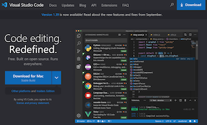

Chapter One - Images and Containers
Introduction to Docker
Docker is a container runtime engine … which means that it runs “containerized” applications, or programs. Containerized applications, or just containers, are the smallest and simplest way to run one or more programs in an isolated context. This method of creating images allows you to run programs, along with all of their dependencies, without needing to install the programs on your computer, or even in the same operating system as the one installed on your computer.
Containers are made of one or more images layered on top of each other. This layering allows you to keep the operating system separated from dependencies separated from the application. This layering also speeds up the process of building containers, and allows you to re-use images in multiple containers.
Container images can be stored in, and downloaded from, registries. The most popular free registry is DockerHub.
Basic Docker Commands
We’re going to tell Docker to download (if you don’t already have it) the latest version of the Ubuntu container for your computer’s architecture and to connect to it in the bash shell as the root user.
docker run -it ubuntu /bin/bash
My computer displayed the following:
Unable to find image 'ubuntu:latest' locally
latest: Pulling from library/ubuntu
22e816666fd6: Pull complete
079b6d2a1e53: Pull complete
11048ebae908: Pull complete
c58094023a2e: Pull complete
Digest: sha256:a7b8b7b33e44b123d7f997bd4d3d0a59fafc63e203d17efedf09ff3f6f516152
Status: Downloaded newer image for ubuntu:latest
root@01970526c47f:/#
That last line that ended with the “hash” or “pound” character indicates that you’re in the Ubuntu operating system running as the root user. To show that you’re in there, try a few commands like ls to list the contents of the folder, then exit when you’re done. In this case, exiting will take you out of the Ubuntu container and terminate it. The Ubuntu image is cached on your computer, so it will not need to be re-downloaded when we run it again.
To see the running docker containers, type docker ps.
You should see the column headers, but no information displayed. Now let’s start up the Ubuntu container again, but this time “detached” from your display: docker run -itd ubuntu.
The string of characters it prints on the screen will be the container ID. You can confirm this, and see that it is running, by printing the running docker containers again: docker ps. Notice that the container ID it lists is an abbreviation - or shortened version - of the full container ID. You can refer to a container by the first few characters of the ID as long as it’s unique.
To see just the list of running container IDs, try using the “quiet” flag: docker ps -q.
To connect to the running container, use the attach command: docker attach <ID> and you will be back in the shell. Remember to type “exit” to leave the container, which will also stop it.
To see all containers on your computer, no matter whether they are running or in any other state, print them all: docker ps -a.
To remove a container from your computer, type docker rm <ID>.
And let’s put the commands together and tell Docker to remove all containers on your computer:
docker rm `docker ps -aq`
Last, let’s list all of the docker images that have been downloaded: docker images. To see just a list of the image IDs, add the quiet flag: docker images -q. To remove an image, use the remove image command: docker rmi <ID>. And to remove all images, put them together:
docker rmi `docker images -q`
Create simple Dockerfile

Choose an editor to create a text file named Dockerfile. I prefer Microsoft’s Visual Studio Code. You will also want Docker Desktop if you plan to build and test on a machine other than the Raspberry Pi. If you want to save Docker images rather than building them every time, you will want to create an account with Docker Hub and use it as your image repository.
Build Docker Image
docker build ./